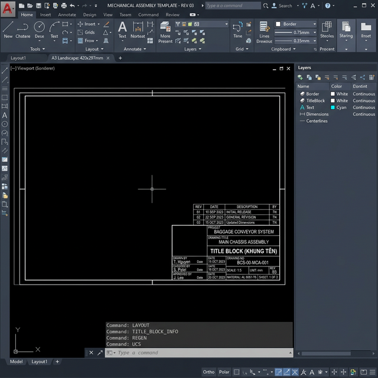
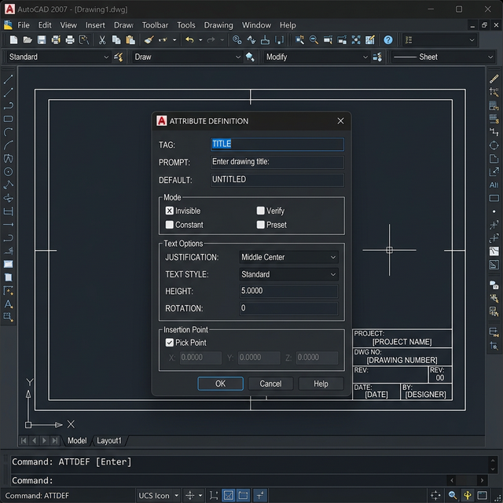
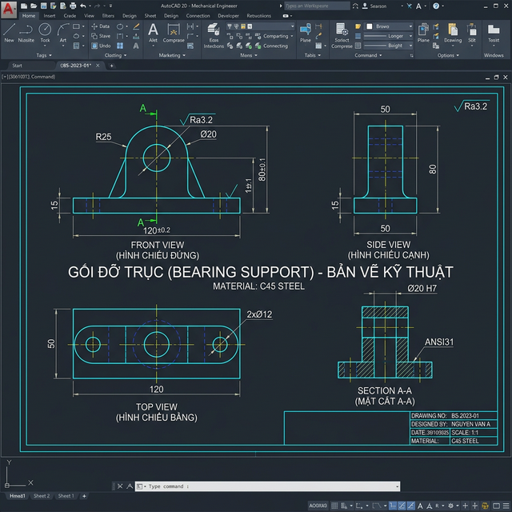
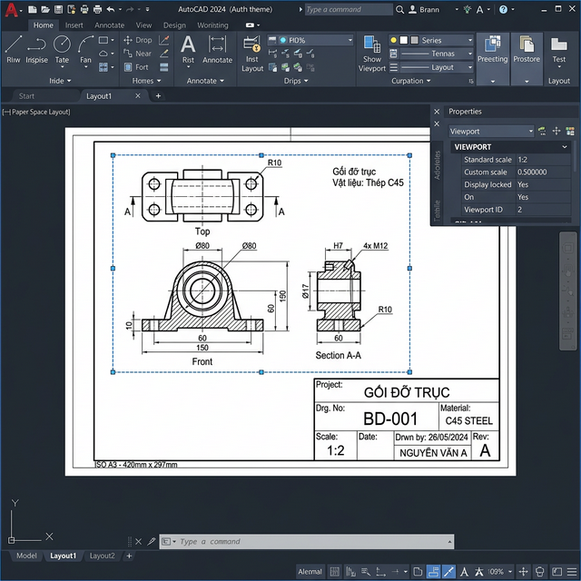
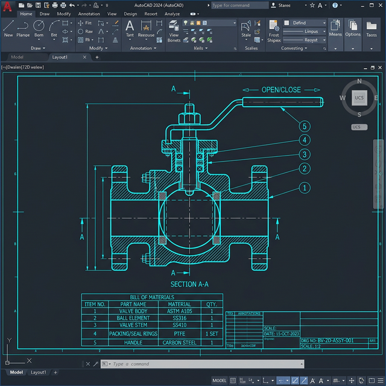
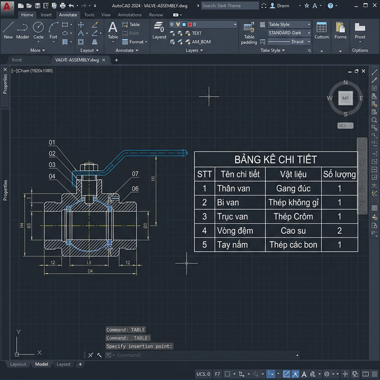

📖 ONE POINT LESSON
📐 Mức Độ 15
Hoàn Thiện Bản Vẽ Kỹ Thuật
Hướng dẫn chi tiết: Tạo Drawing Template A3 → Vẽ chi tiết Gối đỡ trục (3 hình chiếu + mặt cắt) → Bản vẽ lắp ráp Cụm van bi.
📋 BT15.1 — Tạo Drawing Template A3
Tạo file .dwt khổ A3 (420×297) với khung bản vẽ, khung tên, revision block. Dùng ATTDEF tạo attributes.
Bước 1: Tạo file mới và thiết lập
1 Khởi tạo bản vẽ khổ A3
Command: NEW ↵ (Tạo file mới từ scratch)
── Thiết lập đơn vị
Command: UNITS ↵ → Length Type: Decimal, Precision: 0.00
── Thiết lập giới hạn bản vẽ
Command: LIMITS ↵
Lower left corner: 0,0 ↵
Upper right corner: 420,297 ↵
Command: Z ↵ → A ↵ (Zoom All)
── Thiết lập đơn vị
Command: UNITS ↵ → Length Type: Decimal, Precision: 0.00
── Thiết lập giới hạn bản vẽ
Command: LIMITS ↵
Lower left corner: 0,0 ↵
Upper right corner: 420,297 ↵
Command: Z ↵ → A ↵ (Zoom All)
Bước 2: Tạo Layer hệ thống
2 Thiết lập các Layer chuẩn
Command: LA ↵ (Layer Properties Manager)
Layer "Border" → Màu White (7) → Lineweight: 0.70mm
Layer "TitleBlock" → Màu Yellow (2) → Lineweight: 0.35mm
Layer "Text" → Màu Green (3) → Lineweight: 0.00mm
Layer "Viewport" → Màu Cyan (4) → Plot: No Print
Layer "Center" → Màu Red (1) → Linetype: CENTER
Layer "Hidden" → Màu Magenta (6) → Linetype: HIDDEN
Layer "Dim" → Màu Cyan (4) → Lineweight: 0.00mm
Layer "Hatch" → Màu 8 (Gray)
Layer "Border" → Màu White (7) → Lineweight: 0.70mm
Layer "TitleBlock" → Màu Yellow (2) → Lineweight: 0.35mm
Layer "Text" → Màu Green (3) → Lineweight: 0.00mm
Layer "Viewport" → Màu Cyan (4) → Plot: No Print
Layer "Center" → Màu Red (1) → Linetype: CENTER
Layer "Hidden" → Màu Magenta (6) → Linetype: HIDDEN
Layer "Dim" → Màu Cyan (4) → Lineweight: 0.00mm
Layer "Hatch" → Màu 8 (Gray)
Bước 3: Vẽ khung bản vẽ
3 Vẽ khung viền A3 (lề 10mm, lề trái 20mm)
── Chuyển Layer "Border"
Command: RECTANG ↵
First corner: 20,10 ↵ (lề trái 20mm cho đóng gáy)
Other corner: 410,287 ↵
Command: RECTANG ↵
First corner: 20,10 ↵ (lề trái 20mm cho đóng gáy)
Other corner: 410,287 ↵
Bước 4: Vẽ khung tên (Title Block)
4 Tạo khung tên 180×60 ở góc dưới phải
── Chuyển Layer "TitleBlock"
Command: RECTANG ↵ → 230,10 → 410,70 ↵
── Chia các ô trong khung tên bằng LINE:
Command: L ↵ → 230,50 → 410,50 ↵ → ↵ (ngăn Tên bản vẽ/info)
Command: L ↵ → 230,35 → 410,35 ↵ → ↵ (ngăn dưới)
Command: L ↵ → 320,10 → 320,50 ↵ → ↵ (cột dọc)
Command: L ↵ → 365,10 → 365,50 ↵ → ↵
Command: RECTANG ↵ → 230,10 → 410,70 ↵
── Chia các ô trong khung tên bằng LINE:
Command: L ↵ → 230,50 → 410,50 ↵ → ↵ (ngăn Tên bản vẽ/info)
Command: L ↵ → 230,35 → 410,35 ↵ → ↵ (ngăn dưới)
Command: L ↵ → 320,10 → 320,50 ↵ → ↵ (cột dọc)
Command: L ↵ → 365,10 → 365,50 ↵ → ↵

Bước 5: Tạo Attributes bằng ATTDEF
5 Dùng ATTDEF tạo thuộc tính động cho khung tên
Command: ATTDEF ↵
── Attribute 1: Tên bản vẽ
Tag: TITLE | Prompt: Nhập tên bản vẽ: | Default: UNTITLED
Justification: Middle Center | Height: 7
→ Click vào giữa ô Tên bản vẽ (khoảng 320,57)
── Attribute 2: Tỷ lệ
Tag: SCALE | Prompt: Nhập tỷ lệ: | Default: 1:1
Height: 3.5 → Click tại 275,42
── Attribute 3: Ngày vẽ
Tag: DATE | Prompt: Nhập ngày: | Default: DD/MM/YYYY
Height: 3.5 → Click tại 275,22
── Attribute 4: Người vẽ
Tag: DRAWNBY | Prompt: Người vẽ: | Default: ---
Height: 3.5 → Click tại 342,42
── Attribute 5: Vật liệu
Tag: MATERIAL | Prompt: Vật liệu: | Default: ---
Height: 3.5 → Click tại 387,42
── Attribute 1: Tên bản vẽ
Tag: TITLE | Prompt: Nhập tên bản vẽ: | Default: UNTITLED
Justification: Middle Center | Height: 7
→ Click vào giữa ô Tên bản vẽ (khoảng 320,57)
── Attribute 2: Tỷ lệ
Tag: SCALE | Prompt: Nhập tỷ lệ: | Default: 1:1
Height: 3.5 → Click tại 275,42
── Attribute 3: Ngày vẽ
Tag: DATE | Prompt: Nhập ngày: | Default: DD/MM/YYYY
Height: 3.5 → Click tại 275,22
── Attribute 4: Người vẽ
Tag: DRAWNBY | Prompt: Người vẽ: | Default: ---
Height: 3.5 → Click tại 342,42
── Attribute 5: Vật liệu
Tag: MATERIAL | Prompt: Vật liệu: | Default: ---
Height: 3.5 → Click tại 387,42

Bước 6: Tạo Revision Block
6 Vẽ bảng lịch sử chỉnh sửa phía trên khung tên
Command: RECTANG ↵ → 300,70 → 410,95 ↵
Command: L ↵ → 300,85 → 410,85 ↵ → ↵ (header row)
Command: L ↵ → 325,70 → 325,95 ↵ → ↵ (cột Rev)
Command: L ↵ → 360,70 → 360,95 ↵ → ↵ (cột Date)
── Ghi tiêu đề: DT (DTEXT)
Command: DT ↵ → Tại 312,88: REV
Command: DT ↵ → Tại 342,88: DATE
Command: DT ↵ → Tại 385,88: DESCRIPTION
Command: L ↵ → 300,85 → 410,85 ↵ → ↵ (header row)
Command: L ↵ → 325,70 → 325,95 ↵ → ↵ (cột Rev)
Command: L ↵ → 360,70 → 360,95 ↵ → ↵ (cột Date)
── Ghi tiêu đề: DT (DTEXT)
Command: DT ↵ → Tại 312,88: REV
Command: DT ↵ → Tại 342,88: DATE
Command: DT ↵ → Tại 385,88: DESCRIPTION
Bước 7: Tạo Block và lưu Template
7 Gộp thành Block và lưu .dwt
── Chọn tất cả khung + attributes → tạo Block
Command: B ↵ (BLOCK)
Name: TitleBlock_A3
Base point: 0,0
→ Select objects: (quét chọn toàn bộ khung + attributes) ↵
── Lưu làm Template
Command: SAVEAS ↵
File type: AutoCAD Drawing Template (*.dwt)
File name: A3_Template → Save
Command: B ↵ (BLOCK)
Name: TitleBlock_A3
Base point: 0,0
→ Select objects: (quét chọn toàn bộ khung + attributes) ↵
── Lưu làm Template
Command: SAVEAS ↵
File type: AutoCAD Drawing Template (*.dwt)
File name: A3_Template → Save
Khi dùng template: File → New → chọn
A3_Template.dwt. AutoCAD sẽ hỏi nhập giá trị cho từng Attribute (TITLE, SCALE, DATE...).📐 BT15.2 — Vẽ chi tiết "Gối đỡ trục"
3 hình chiếu + mặt cắt + kích thước + dung sai + vật liệu → Xuất Layout viewport 1:2
Thông số chi tiết Gối đỡ trục
| Thông số | Giá trị | Ghi chú |
|---|---|---|
| Đế (L×W×H) | 120 × 80 × 15 mm | Tấm đế hình chữ nhật |
| Tai đỡ (bán kính) | R25 mm | 2 tai bán trụ, cao 50mm từ đế |
| Khoảng cách 2 tai | 60 mm | Đối xứng qua trục giữa |
| Lỗ trục xuyên | Ø20 mm | Xuyên qua 2 tai |
| Lỗ bắt bulong đế | 4 × Ø8 mm | Ở 4 góc, cách mép 12mm |
| Vật liệu | Thép C45 | Tôi cải thiện |
Bước 1: Thiết lập và vẽ Hình chiếu đứng (Front View)
1 Vẽ mặt trước — hình dạng chính
── Mở template A3_Template.dwt, chuyển Layer "0"
── Vẽ đế (hình chữ nhật 120×15)
Command: RECTANG ↵ → 0,0 → 120,15 ↵
── Vẽ tai đỡ trái (bán trụ)
Command: L ↵ → 30,15 → 30,40 ↵ → ↵
Command: ARC ↵ → Start: 30,40 → End: 30,65 → Radius: 25
(hoặc dùng Center: 30,52.5 với bán kính 25 — đường tròn + trim)
── Mirror sang tai đỡ phải
Command: MI ↵ → Select tai trái → Mirror line: 60,0 to 60,70
── Vẽ lỗ trục Ø20 (vòng tròn ẩn nét đứt)
── Chuyển Layer "Hidden"
Command: C ↵ → Center: 60,40 → Radius: 10
── Vẽ đế (hình chữ nhật 120×15)
Command: RECTANG ↵ → 0,0 → 120,15 ↵
── Vẽ tai đỡ trái (bán trụ)
Command: L ↵ → 30,15 → 30,40 ↵ → ↵
Command: ARC ↵ → Start: 30,40 → End: 30,65 → Radius: 25
(hoặc dùng Center: 30,52.5 với bán kính 25 — đường tròn + trim)
── Mirror sang tai đỡ phải
Command: MI ↵ → Select tai trái → Mirror line: 60,0 to 60,70
── Vẽ lỗ trục Ø20 (vòng tròn ẩn nét đứt)
── Chuyển Layer "Hidden"
Command: C ↵ → Center: 60,40 → Radius: 10
Bước 2: Vẽ Hình chiếu bằng (Top View)
2 Vẽ mặt bằng bên dưới Front View
── Vẽ phía dưới Front View, cách ~30mm
Command: RECTANG ↵ → 0,-30 → 120,-110 ↵ (đế 120×80)
── Vẽ 2 hình chữ nhật tai đỡ (nét ẩn)
Layer "Hidden":
Command: RECTANG ↵ → 17.5,-30 → 42.5,-110 ↵ (tai trái)
Command: RECTANG ↵ → 77.5,-30 → 102.5,-110 ↵ (tai phải)
── Vẽ lỗ trục (nét ẩn) và 4 lỗ bulong
Command: C ↵ → Center: 60,-70 → R: 10 (lỗ trục Ø20)
Command: C ↵ → 12,-42 → R: 4 (lỗ bulong Ø8)
→ Mirror + Array cho 4 lỗ còn lại
Command: RECTANG ↵ → 0,-30 → 120,-110 ↵ (đế 120×80)
── Vẽ 2 hình chữ nhật tai đỡ (nét ẩn)
Layer "Hidden":
Command: RECTANG ↵ → 17.5,-30 → 42.5,-110 ↵ (tai trái)
Command: RECTANG ↵ → 77.5,-30 → 102.5,-110 ↵ (tai phải)
── Vẽ lỗ trục (nét ẩn) và 4 lỗ bulong
Command: C ↵ → Center: 60,-70 → R: 10 (lỗ trục Ø20)
Command: C ↵ → 12,-42 → R: 4 (lỗ bulong Ø8)
→ Mirror + Array cho 4 lỗ còn lại
Bước 3: Vẽ Hình chiếu cạnh (Side View)
3 Vẽ mặt bên — bên phải Front View
── Bên phải Front, cách ~30mm
Command: RECTANG ↵ → 150,0 → 230,15 ↵ (đế 80×15)
Command: RECTANG ↵ → 165,15 → 215,65 ↵ (tai đỡ 50×50, ARC trên)
── Vẽ lỗ trục (mặt bên → vòng tròn thấy được)
Command: C ↵ → Center: 190,40 → R: 10
Command: RECTANG ↵ → 150,0 → 230,15 ↵ (đế 80×15)
Command: RECTANG ↵ → 165,15 → 215,65 ↵ (tai đỡ 50×50, ARC trên)
── Vẽ lỗ trục (mặt bên → vòng tròn thấy được)
Command: C ↵ → Center: 190,40 → R: 10
Bước 4: Vẽ mặt cắt A-A
4 Tạo mặt cắt ngang qua lỗ trục
── Vẽ đường cắt A-A trên Front View
Layer "Center":
Command: L ↵ → -5,40 → 125,40 ↵ → ↵
── Ghi TEXT "A" ở 2 đầu đường cắt
── Vẽ mặt cắt A-A (bên phải Side View)
── Hình dạng: tai đỡ bán trụ + đế — nhìn cắt ngang
Command: RECTANG ↵ → 260,0 → 340,15 ↵ (đế)
Command: RECTANG ↵ → 275,15 → 325,40 ↵ (thân tai)
Command: ARC ↵ → semicircle trên đầu tai → R25
── CIRCLE lỗ trục tại tâm tai
Command: C ↵ → Center: 300,40 → R: 10
── Hatch mặt cắt
Command: H ↵ (HATCH)
Pattern: ANSI31 | Scale: 1 | Angle: 45
→ Pick vùng đặc (không tô vào lỗ trục!)
Layer "Center":
Command: L ↵ → -5,40 → 125,40 ↵ → ↵
── Ghi TEXT "A" ở 2 đầu đường cắt
── Vẽ mặt cắt A-A (bên phải Side View)
── Hình dạng: tai đỡ bán trụ + đế — nhìn cắt ngang
Command: RECTANG ↵ → 260,0 → 340,15 ↵ (đế)
Command: RECTANG ↵ → 275,15 → 325,40 ↵ (thân tai)
Command: ARC ↵ → semicircle trên đầu tai → R25
── CIRCLE lỗ trục tại tâm tai
Command: C ↵ → Center: 300,40 → R: 10
── Hatch mặt cắt
Command: H ↵ (HATCH)
Pattern: ANSI31 | Scale: 1 | Angle: 45
→ Pick vùng đặc (không tô vào lỗ trục!)

Bước 5: Ghi kích thước và dung sai
5 Ghi DIM đầy đủ + dung sai lỗ trục
── Chuyển Layer "Dim"
Command: DIMLINEAR ↵ → ghi kích thước đế: 120, 80, 15
Command: DIMRADIUS ↵ → chọn ARC tai đỡ: R25
Command: DIMDIA ↵ → chọn lỗ trục: Ø20
── Ghi dung sai lỗ trục
Command: D ↵ (Dim Style Manager)
→ Modify → Tab "Tolerances"
→ Method: Deviation
→ Upper: +0.021 | Lower: 0.000
→ OK → ghi lại kích thước: Ø20 H7 (+0.021/0)
── Ghi vật liệu bằng MLEADER
Command: MLD ↵ → chỉ vào chi tiết → ghi: C45 Steel
Command: DIMLINEAR ↵ → ghi kích thước đế: 120, 80, 15
Command: DIMRADIUS ↵ → chọn ARC tai đỡ: R25
Command: DIMDIA ↵ → chọn lỗ trục: Ø20
── Ghi dung sai lỗ trục
Command: D ↵ (Dim Style Manager)
→ Modify → Tab "Tolerances"
→ Method: Deviation
→ Upper: +0.021 | Lower: 0.000
→ OK → ghi lại kích thước: Ø20 H7 (+0.021/0)
── Ghi vật liệu bằng MLEADER
Command: MLD ↵ → chỉ vào chi tiết → ghi: C45 Steel
Bước 6: Xuất sang Layout (Paper Space) tỷ lệ 1:2
6 Chuyển sang Layout, tạo Viewport 1:2
── Click tab "Layout1" ở dưới bản vẽ
── Xóa viewport mặc định (nếu có)
Command: ERASE ↵ → chọn viewport cũ → ↵
── Tạo viewport mới
Command: MV ↵ (MVIEW)
First corner: 25,80 ↵
Other corner: 395,280 ↵
── Double-click vào viewport → chuyển Model Space
Command: Z ↵ → E ↵ (Zoom Extents)
── Set tỷ lệ 1:2
Command: Z ↵ → 1/2xp ↵ (XP = scale relative to paper)
── Khóa viewport để không bị zoom lỗi
→ Double-click ra ngoài viewport (Paper Space)
→ Chọn viewport → Properties → Display Locked = Yes
── Xóa viewport mặc định (nếu có)
Command: ERASE ↵ → chọn viewport cũ → ↵
── Tạo viewport mới
Command: MV ↵ (MVIEW)
First corner: 25,80 ↵
Other corner: 395,280 ↵
── Double-click vào viewport → chuyển Model Space
Command: Z ↵ → E ↵ (Zoom Extents)
── Set tỷ lệ 1:2
Command: Z ↵ → 1/2xp ↵ (XP = scale relative to paper)
── Khóa viewport để không bị zoom lỗi
→ Double-click ra ngoài viewport (Paper Space)
→ Chọn viewport → Properties → Display Locked = Yes

Điều chỉnh
DIMLFAC = 2 khi ghi kích thước trong viewport 1:2 để kích thước hiển thị đúng giá trị thực.🔧 BT15.3 — Bản vẽ lắp ráp "Cụm van bi"
Vẽ mặt cắt cụm van bi (5 chi tiết) + Ghi số thứ tự balloon + Bảng kê chi tiết BOM
Danh sách 5 chi tiết
| STT | Tên chi tiết | Vật liệu | SL |
|---|---|---|---|
| 1 | Thân van (Body) | Gang xám GX15-32 | 1 |
| 2 | Bi van (Ball) | Inox SUS304 | 1 |
| 3 | Trục van (Stem) | Thép Cr-Mo | 1 |
| 4 | Vòng đệm (Seal) | PTFE / Cao su | 2 |
| 5 | Tay nắm (Handle) | Thép CT3 | 1 |
Bước 1: Vẽ mặt cắt thân van
1 Vẽ profile mặt cắt dọc thân van
── Thân van: hình trụ rỗng có 2 mặt bích
Command: PL ↵ (PLINE — vẽ nửa mặt cắt trên)
From: 0,0 → 60,0 → 60,5 → 50,5 → 50,30
→ 40,30 → 40,35 (khoang bi)
→ 40,45 → 50,45 → 50,70
→ 60,70 → 60,75 → 0,75 ↵ C ↵ (Close)
── Mirror profile xuống dưới đường tâm
Command: MI ↵ → Mirror line: trục ngang giữa
── Hatch thân van
Command: H ↵ → Pattern: ANSI31 → Angle: 45 → Pick vùng đặc thân van
Command: PL ↵ (PLINE — vẽ nửa mặt cắt trên)
From: 0,0 → 60,0 → 60,5 → 50,5 → 50,30
→ 40,30 → 40,35 (khoang bi)
→ 40,45 → 50,45 → 50,70
→ 60,70 → 60,75 → 0,75 ↵ C ↵ (Close)
── Mirror profile xuống dưới đường tâm
Command: MI ↵ → Mirror line: trục ngang giữa
── Hatch thân van
Command: H ↵ → Pattern: ANSI31 → Angle: 45 → Pick vùng đặc thân van
Bước 2: Vẽ bi van + trục + vòng đệm
2 Vẽ các chi tiết bên trong
── Bi van: hình tròn ở khoang giữa
Command: C ↵ → Center: 30,37.5 → R: 15
(Hatch bi với pattern ANSI32 để phân biệt)
── Trục van: hình chữ nhật đi lên từ bi
Command: RECTANG ↵ → 25,52 → 35,90
(Hatch trục với ANSI33, góc khác)
── Vòng đệm: 2 hình chữ nhật nhỏ quanh trục
Command: RECTANG ↵ → 23,50 → 37,53 (đệm trên)
Command: RECTANG ↵ → 23,22 → 37,25 (đệm dưới)
(Hatch seal với DOTS hoặc solid đen)
── Tay nắm: LINE phía trên trục
Command: L ↵ → 10,90 → 50,90 ↵ → ↵
Command: L ↵ → 10,95 → 50,95 ↵ → ↵
Command: C ↵ → Center: 30,37.5 → R: 15
(Hatch bi với pattern ANSI32 để phân biệt)
── Trục van: hình chữ nhật đi lên từ bi
Command: RECTANG ↵ → 25,52 → 35,90
(Hatch trục với ANSI33, góc khác)
── Vòng đệm: 2 hình chữ nhật nhỏ quanh trục
Command: RECTANG ↵ → 23,50 → 37,53 (đệm trên)
Command: RECTANG ↵ → 23,22 → 37,25 (đệm dưới)
(Hatch seal với DOTS hoặc solid đen)
── Tay nắm: LINE phía trên trục
Command: L ↵ → 10,90 → 50,90 ↵ → ↵
Command: L ↵ → 10,95 → 50,95 ↵ → ↵

Bước 3: Ghi số thứ tự Balloon
3 Dùng MLEADER tạo balloon số chi tiết
── Thiết lập MLEADER style dạng balloon
Command: MLEADERSTYLE ↵
→ New style: Balloon
→ Tab "Content": Type = Block, Block = Circle hoặc _TagSlot
(Hoặc dùng Text + vẽ Circle bao quanh thủ công)
── Cách nhanh: dùng MLEADER text + CIRCLE
Command: MLD ↵ → chỉ vào thân van → ghi: 1
Command: C ↵ → bao quanh text "1" bán kính 4
── Lặp lại cho 5 chi tiết:
① → Thân van ② → Bi van ③ → Trục van
④ → Vòng đệm ⑤ → Tay nắm
Command: MLEADERSTYLE ↵
→ New style: Balloon
→ Tab "Content": Type = Block, Block = Circle hoặc _TagSlot
(Hoặc dùng Text + vẽ Circle bao quanh thủ công)
── Cách nhanh: dùng MLEADER text + CIRCLE
Command: MLD ↵ → chỉ vào thân van → ghi: 1
Command: C ↵ → bao quanh text "1" bán kính 4
── Lặp lại cho 5 chi tiết:
① → Thân van ② → Bi van ③ → Trục van
④ → Vòng đệm ⑤ → Tay nắm
Bước 4: Tạo bảng kê chi tiết (BOM)
4 Dùng TABLE tạo bảng kê chi tiết
Command: TABLE ↵
Columns: 4 | Data rows: 5
Column width: 35 | Row height: 8
── Nhập dữ liệu bảng:
Header: BẢNG KÊ CHI TIẾT
Col 1: STT | Col 2: Tên chi tiết | Col 3: Vật liệu | Col 4: SL
Row 1: 1 | Thân van | Gang GX15-32 | 1
Row 2: 2 | Bi van | Inox SUS304 | 1
Row 3: 3 | Trục van | Thép Cr-Mo | 1
Row 4: 4 | Vòng đệm | PTFE | 2
Row 5: 5 | Tay nắm | Thép CT3 | 1
Columns: 4 | Data rows: 5
Column width: 35 | Row height: 8
── Nhập dữ liệu bảng:
Header: BẢNG KÊ CHI TIẾT
Col 1: STT | Col 2: Tên chi tiết | Col 3: Vật liệu | Col 4: SL
Row 1: 1 | Thân van | Gang GX15-32 | 1
Row 2: 2 | Bi van | Inox SUS304 | 1
Row 3: 3 | Trục van | Thép Cr-Mo | 1
Row 4: 4 | Vòng đệm | PTFE | 2
Row 5: 5 | Tay nắm | Thép CT3 | 1

Bước 5: Hoàn thiện bản vẽ lắp ráp
5 Ghi kích thước lắp ráp + Xuất Layout
── Ghi kích thước tổng thể (Overall dimensions)
Command: DIMLINEAR ↵ → chiều dài tổng, chiều rộng bích
Command: DIMDIA ↵ → đường kính lỗ nối ống
── Xuất Layout (tương tự BT15.2, bước 6)
→ Tab "Layout1" → MVIEW → set scale 1:2 → Lock viewport
→ Kiểm tra khung tên đã điền đủ thông tin
Command: DIMLINEAR ↵ → chiều dài tổng, chiều rộng bích
Command: DIMDIA ↵ → đường kính lỗ nối ống
── Xuất Layout (tương tự BT15.2, bước 6)
→ Tab "Layout1" → MVIEW → set scale 1:2 → Lock viewport
→ Kiểm tra khung tên đã điền đủ thông tin
Bản vẽ lắp ráp không ghi kích thước chi tiết (chỉ ghi kích thước tổng thể). Kích thước chi tiết ghi trong bản vẽ chế tạo riêng.
🏆
Tổng kết OPL — Mức độ 15
BT15.1: Template A3 (420×297) với 8 layers, khung tên ATTDEF (5 attributes), revision block → SAVEAS .dwt
BT15.2: Gối đỡ trục: Front + Top + Side + Section A-A + Hatch ANSI31 + DIM + Dung sai Ø20H7 → Layout 1:2
BT15.3: Cụm van bi: 5 chi tiết mặt cắt + 5 balloon MLEADER + TABLE BOM 4 cột
BT15.2: Gối đỡ trục: Front + Top + Side + Section A-A + Hatch ANSI31 + DIM + Dung sai Ø20H7 → Layout 1:2
BT15.3: Cụm van bi: 5 chi tiết mặt cắt + 5 balloon MLEADER + TABLE BOM 4 cột
📑
Cần ôn lại lý thuyết?
Xem Chương 24: Bản vẽ kỹ thuật để nắm vững quy trình tạo bản vẽ hoàn chỉnh.